Actividad 17: Análisis Forense de Memoria Volátil
Reporte Original
Documentación técnica de la extracción de evidencia // Extensión: .pdf
Antecedentes del Caso (Hipótesis)
Elementos de la FGM especializada obtuvieron una muestra de un volcado de memoria RAM de un presunto cibercriminal autodenominado "Morty". Inteligencia (CNDI/SEDENE) presume que este sujeto está vinculado al trasiego de estupefacientes y rapto, empleando ingeniería social vía Telegram. Se le asocia con el usuario "Ricky" y la creación de una botnet ("SO_Just_M0v3_Socy"), así como con servidores identificados como "Lunar", administrados bajo el alias TFE.
Objetivo Forense
Realizar un análisis exhaustivo del volcado de memoria OtterCTF.vmem utilizando Volatility Framework. El objetivo es identificar el perfil del SO, extraer contraseñas en texto claro, identificar procesos maliciosos y conexiones de red activas, recuperar el historial de navegación para identificar correos de ataque, y finalmente realizar un volcado de proceso (procdump) para extraer la cartera criptográfica utilizada por el ransomware.
Simulador Forense de RAM
Procedimiento de Análisis Forense (19 Evidencias)
Identificación de Huso Horario (imageinfo)
Se utilizó imageinfo para determinar el perfil. El análisis reveló que el volcado se generó a las 19:34:22 UTC+0, pero el equipo estaba configurado en UTC+3 (22:34:22). Este desfase sugiere que el cibercriminal opera u oculta su actividad en zonas como Europa del Este o Rusia.
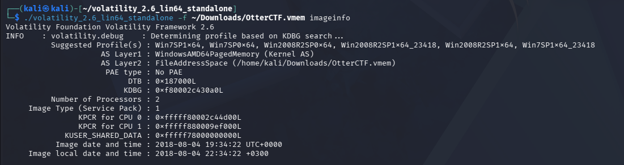
Validación del SO y Arquitectura (windows.info)
Mediante Volatility 3, el plugin windows.info confirmó que el sistema operativo atacado es Windows 7 SP1 de 64 bits. Establecer el perfil correcto (Win7SP1x64) es metodológicamente vital, ya que un error aquí corrompería la interpretación de las estructuras del kernel para el resto de la extracción.
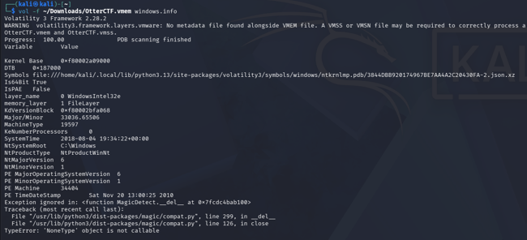
Extracción de Hashes y Contraseña (hashdump y mimikatz)
Se ejecutaron los comandos hashdump y mimikatz. Hashdump arrojó el hash NTLM, pero como la sesión estaba activa durante el volcado, Mimikatz logró extraer la credencial en texto plano desde el proceso lsass.exe (WDigest): la contraseña del usuario Rick en el equipo WIN-LO6FAF3DTFE es MortyIsReallyAnOtter.
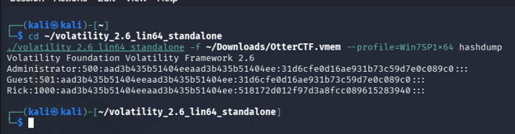
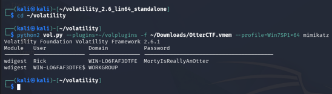
Conexiones de Red Iniciales (netscan)
El comando netscan reconstruyó la tabla de conexiones buscando estructuras_TCP_ENDPOINT. Permitió identificar la dirección LAN de la víctima (192.168.202.131), vital para diferenciar el tráfico local de los servidores atacantes.
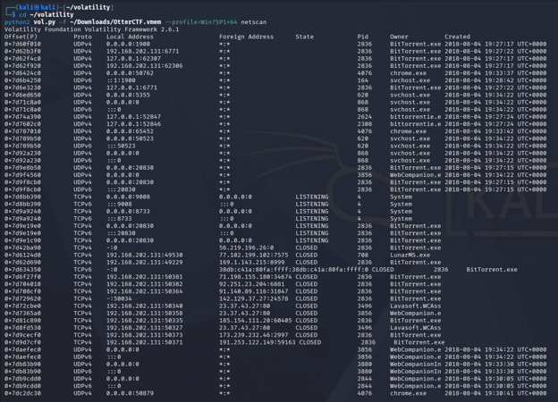
Enumeración del Registro del Sistema (hivelist)
Se utilizó hivelist para ubicar los offsets de las colmenas del Registro (SYSTEM, SAM, SOFTWARE y NTUSER.DAT). Conocer estas ubicaciones de memoria es el paso previo necesario para extraer artefactos.
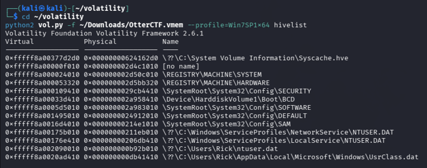
Identificación del Ordenador Host (printkey)
Usando el offset del hive SYSTEM extraído previamente, se consultó la llave ComputerName mediante printkey. Esto confirmó el nombre WIN-LO6FAF3DTFE, realizando una validación cruzada con el resultado de Mimikatz.
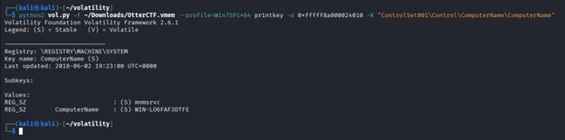
Análisis y Detección de Malware (pslist)
El plugin pslist identificó 3 procesos maliciosos clave:
1. Rick And Morty (PID 3820): Proceso raíz.
2. vmware-tray.exe (PID 3720): Ejecuta camuflaje (process masquerading).
3. LunarMS.exe (PID 708): Vínculo directo con la infraestructura externa.
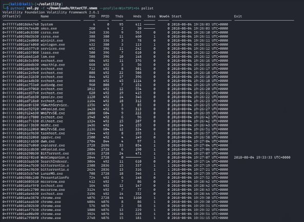
Servidor Malicioso y Geolocalización (netscan + OSINT)
Se filtró la salida de netscan por el PID 708 (LunarMS), revelando una conexión saliente de la IP local hacia 77.102.199.102:7575. La investigación en fuentes OSINT (geolocation) determinó que esta IP se ubica en Londres, Reino Unido, confirmando el uso de infraestructura de terceros (proxy).
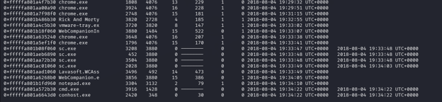
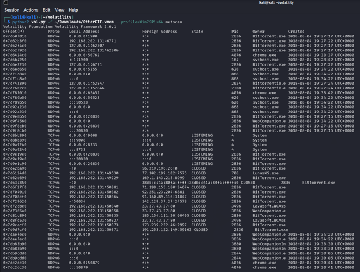
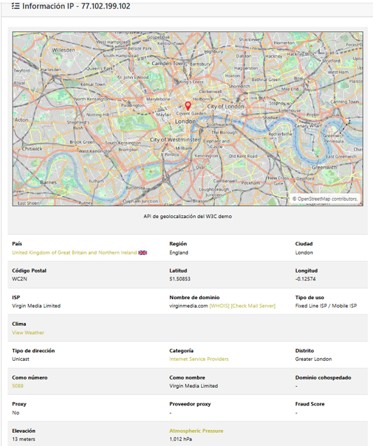
Extracción de Correos desde SQLite (filescan, dumpfiles y strings)
Se utilizó filescan | grep "history" para ubicar la base de datos de navegación de Chrome, seguida de dumpfiles para extraerla de RAM a disco físico. Luego, mediante strings y grep con regex, se extrajeron las cuentas usadas para ingeniería social: rickopicko@mail.com y rickypinky@mail.com.
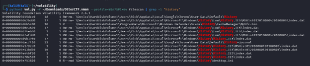
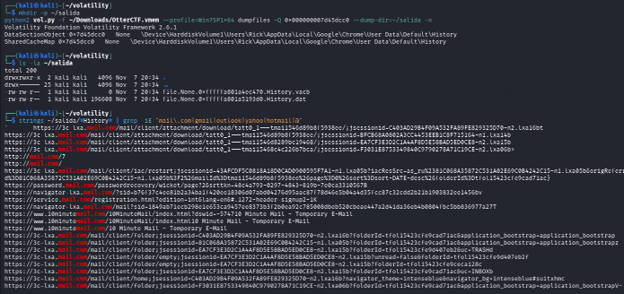
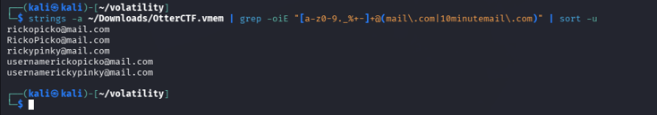
Análisis Inverso del Ransomware (procdump y strings)
Se volcó el proceso falso de VMware (PID 3720) utilizando procdump. El ejecutable extraído correspondía al ransomware Hidden Tear (desarrollado en .NET). Como .NET usa UTF-16LE, se aplicó strings -el para detectar primero la nota de rescate y la mención de los bitcoins solicitados.
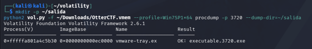
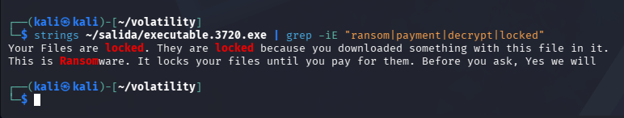
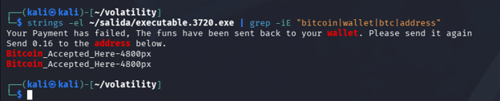
Extracción de Cartera Bitcoin y Verificación (OSINT)
Con una Expresión Regular diseñada para atrapar direcciones Base58, se logró detectar la cartera Bitcoin solicitada en el rescate: 1MmpEmebJkqXG8nQv4cjJSmxZQFVmFo63M. La cartera se verificó en la base de datos btcblack.it para determinar si existían reportes previos de listas negras asociados a fraudes.
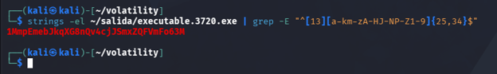
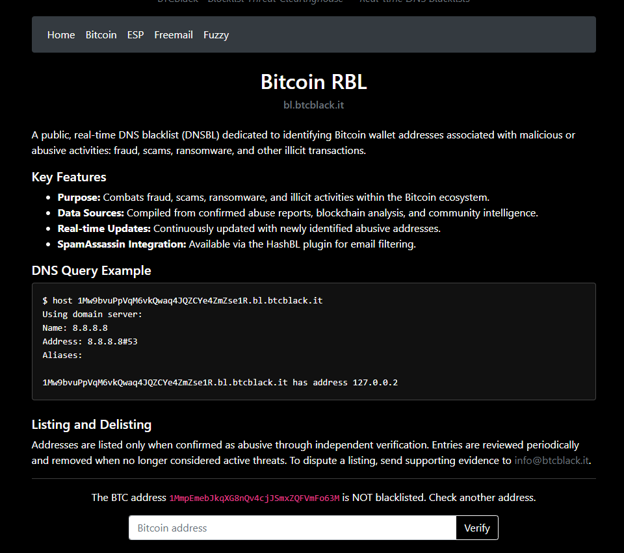